Politics and Society in IndiaHigh priority
Open with the social bases of politics, then take caste, region and religion in turn, and close on a thinker's vision.
Chapter map#
- Politics and society
Ethnicity
- Identity movements
- Ethnocentrism
- Sub-ethnicity
Caste
- Kothari
- OBC reservation
- Creamy layer
- Conflicts
Region
- Regionalism
- Federalism
- 73rd and 74th
Religion
- Secularism
- Communalism
- Riots
Democracy
- Nation and citizenship
- Parties
- Elites
- Media
Thinkers
- Gandhi
- Nehru
- Ambedkar
- Roy
- Savarkar
Exam lens#
The story first#
In simple words#
- Indian politics runs on caste, religion, language, tribe and region; caste adapts: caste gets politicised (Kothari).
- OBC reservation (Article 340, Mandal) comes with the creamy layer; regionalism can threaten or strengthen federalism.
- Secularism in India = equal respect and principled distance; communalism = religious identity turned political; philosophies: Gandhi, Nehru, Ambedkar, Roy, Savarkar.
| Term | In plain words |
|---|---|
| Ethnic group | Collectivity identifying through shared culture, language, religion, ancestry or history. |
| Ethnocentrism | Regarding one's own culture or community as superior. |
| Creamy layer | Better-off OBCs excluded from reservation benefits. |
| Son of the soil | Movement against migrants entering a region, as of Shiv Sena and MNS. |
| Panth Nirpekshta | Hindi term for state neutrality towards religions. |
| Principled distance | Bhargava: critical respect and selective intervention in religion. |
| Communalism | Ideology treating a religious community as a separate, opposed political unit. |
| Radical Humanism | M.N. Roy's philosophy placing the individual at the centre. |
| Sarvodaya | Gandhi's welfare of all. |
1 · Politics and Society in India#
- Politics and society are deeply interconnected, as political institutions, processes, and ideologies both shape and are shaped by the social structure.
- In India, factors such as caste, religion, ethnicity, region, class, and language have played a major role in influencing political behaviour, electoral mobilization, leadership patterns, and state policies.
- At the same time, democratic politics, constitutional values, social movements, and state interventions have transformed traditional social relations and identities.
- Thus, Indian politics cannot be understood merely in terms of formal institutions; it must be analysed in the wider context of social structure, historical processes, and struggles over power, identity, and resources.
2 · Ethnicity and Identity in Indian Politics#

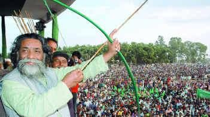
- Processually and organizationally, the Indian political system appears similar to western liberal democracies.
- However, in practice, Indian democracy is deeply shaped by social identities such as caste, religion, language, tribe, and region.
- Politics in India often involves competing identity claims, ethnic mobilization, and struggles over recognition, resources, and power.
- Thus, unlike many Western societies where class-based politics dominates, Indian politics has historically been characterized by identity-based political mobilization.
- Shibu Soren (1944-2025) played a crucial role in mobilizing the tribals for the creation of Jharkhand An ethnic group refers to a collectivity whose members identify themselves on the basis of shared culture, language, religion, ancestry, customs, or historical experiences.
- Ethnicity therefore becomes an important source of political identity and social solidarity.
- In India, ethnic identities frequently influence voting behaviour, party formation, social movements, and demands for autonomy or separate statehood.
3 · Social Bases of Political Mobilization in India#
- Political mobilization in post-independence India has largely taken place around social identities such as caste, religion, language, tribe, and region.
- Initially, the Congress system attempted to integrate diverse social groups under a broad nationalist framework.
- However, over time, democratic politics encouraged marginalized groups to organize politically around identity-based demands.
- Caste-based mobilization increased significantly after the decline of Congress dominance and the rise of backward caste politics, particularly after the Mandal Commission implementation.
- Similarly, linguistic and regional identities gave rise to regional parties and statehood movements.
- Religious identities also became politically significant through movements such as Hindutva.
- At the same time, the nature of political mobilization has changed over the last 60-70 years.
- Earlier mobilization was often elite-led and centred around nationalism and developmental issues.
- Contemporary mobilization is more fragmented, competitive, and identity-driven, involving sub-castes, tribes, regions, and localized identities.
- Media, globalization, migration, and democratic deepening have further intensified identity assertions.
4 · Ethnic Conflicts#
- Ethnic conflicts arise when different identity groups compete over resources, political representation, cultural recognition, or territorial control.
- India has witnessed several ethnic conflicts involving caste, religion, tribe, and language.
- Many tribal conflicts, though appearing cultural or ethnic in nature, often conceal struggles over political and economic power.
- Tribal regions rich in minerals, forests, and land have witnessed conflicts due to displacement, resource exploitation, and exclusion from development benefits.
- Conflicts in regions such as the North-East and central tribal belt often combine ethnic identity with demands for autonomy, control over resources, and political representation.
- Similarly,communal conflicts and caste conflicts also reflect deeper struggles over power and social hierarchy.
- Thus, ethnicity frequently becomes a means of political mobilization through which groups articulate economic and political grievances.
5 · Ethnocentrism and Conflict#
- Ethnocentrism refers to the tendency of a group to regard its own culture, identity, or community as superior to others.
- Rising ethnocentrism intensifies social polarization and weakens social cohesion.
- In India, linguistic chauvinism, religious majoritarianism, caste exclusiveness, and regional hostility often generate conflicts and exclusionary politics.
- Ethnocentrism contributes to:
- 1. Communal violence 2. Regional hostility against migrants 3.
- Tribal-non-tribal tensions 4. Caste violence 5.
- Separatist movements Thus, while ethnic identity can strengthen solidarity within groups, excessive ethnocentrism can threaten democratic pluralism and national integration.
6 · Ethnicity and Identity Movements#
- India has witnessed numerous identity movements based on ethnicity, language, caste, tribe, and religion.
- These movements generally emerge from perceived discrimination, cultural marginalization, economic deprivation, or political exclusion.
- Ethnic and identity movements may demand:
- 1. Greater autonomy 2. Separate states 3.
- Cultural recognition and preservation 4.
- Reservation and representation 5. Protection of language and traditions Important identity and ethnic movements in India include the Dravidian movement in South India, which challenged Brahmin dominance and promoted Tamil identity; the Khalistan movement seeking a separate Sikh homeland; and the Naga and Mizo movements in the North-East, which combined ethnic identity with demands for autonomy and self-determination.
- Similarly, the Jharkhand and Bodo movements emerged around tribal identity, regional underdevelopment, and demands for separate statehood or autonomy.
- The Hindutva movement, centred around the idea of Hindu cultural nationalism, has also significantly shaped identity politics and political mobilization in contemporary India.
- Thus, identity movements are not merely cultural movements; they are often linked to struggles over resources, dignity, and political power.
7 · Ethnicity and Sub-Ethnicity#
- Ethnic groups are not homogeneous. Within larger ethnic groups, smaller sub-ethnic identities often emerge based on clan, tribe, sub-caste, dialect, or region.
- These are referred to as sub-ethnicities.
- For example, regional differences within linguistic communities based on differences in dialects may create sub-ethnicities.
- Sub-ethnic identities may compete with broader ethnic solidarities, producing internal conflicts and fragmentation.
- Democratic politics and reservation policies sometimes intensify such sub-ethnic assertions due to competition over political benefits and state resources.
- For example, rivalries amongst Naga factions based on clan affiliations (Tangkhul, Konyak, Sumi) has fractured the Naga movement.
- Contestation between Barelvi and Deobandi groups in Uttar Pradesh and the Sunni vs Shia Muharram-related tensions in Kashmir go beyond religion as the common ethnic identity of Indian Muslims.
- The Gond tribe in in Chhattisgarh has several sub-divisions such as the Muria Gond and Maria Gond.
- In conclusion, ethnicity and identity have become central features of Indian politics due to the country’s immense social diversity and democratic mobilization.
- While identity politics has enabled marginalized groups to articulate demands for justice, representation, and recognition, excessive ethnocentrism and competitive identity assertions have also generated conflicts and fragmentation.
- Therefore, the challenge before Indian democracy lies in balancing ethnic diversity with constitutional values of secularism, equality, and national integration.
8 · Caste and Indian Politics#

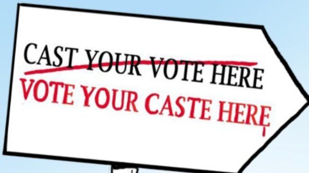
- Caste and democracy are often viewed as incompatible because caste is based on hierarchy and inequality, whereas democracy is founded upon equality, liberty, and fraternity.
- B. R. Ambedkar argued that political democracy cannot function well without social democracy.
- He warned that independent India would enter an “era of contradictions” where political equality would coexist with deep social inequality rooted in caste.
- On the other hand, modernization theorists and leaders such as Jawaharlal Nehru believed that modernization and industrialization would gradually weaken caste identities.
- Indian politics is influenced by Caste However, the actual functioning of Indian democracy has shown that caste has not disappeared; rather, it has adapted itself to democratic politics.
- Democracy has deepened in India, but caste has also displayed remarkable resilience.
- Andre Beteille argues that democratic politics has, in many ways, reinvigorated caste identities.
- Elections, representation, reservations, and political competition have transformed caste into an important basis of political mobilization.
9 · Caste Politics and Political Mobilization#
- Caste politics refers to the use of caste identities for political mobilization, electoral competition, and distribution of power and resources.
- Rajni Kothari famously argued that it is not only politics that gets caste-ridden, but caste also gets politicized.
- According to him, democratic politics operates through existing social identities, and in India, caste provides a ready-made framework for political organization and support mobilization.
- Political parties often select candidates, distribute tickets, and build alliances by taking caste equations into account.
- Voting behaviour in many regions is influenced by caste loyalties and identity considerations.
- Thus, caste has become a major instrument for political participation and representation.
- M. N. Srinivas introduced the concept of vote bank to explain how caste groups often vote collectively under the influence of local elites or political leaders.
- Srinivas further discussed the horizontal consolidation of caste, whereby castes that were earlier localized began organizing at regional and state levels due to improved communication, political awareness, and electoral mobilization.
- This contributed to the emergence of powerful caste associations and regional political movements.
- Lately, scholars such as Suhas Palshikar argue that caste as the sole organizing principle in politics has begun to reach its limits.
- Electoral success increasingly depends upon broader social coalitions, leadership, welfare policies, and development issues.
- Dipankar Gupta similarly contends that the role of caste in elections is often exaggerated, as no single caste is numerically sufficient to ensure victory in most constituencies.
10 · Backward Classes Movements#

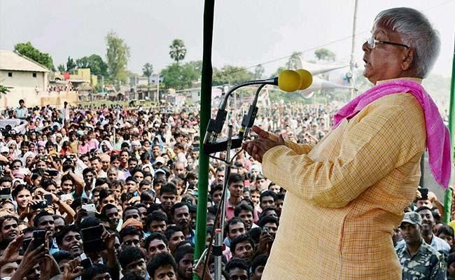
- Backward class movements emerged as attempts by socially and educationally disadvantaged castes to secure dignity, representation, and access to resources.
- These movements challenged upper-caste dominance and demanded reservations, political representation, and social justice.
- RJD leader Lalu Yadav led the OBC mobilization in Bihar The non-Brahmin movements in South India, particularly the Dravidian movement, were among the earliest backward caste mobilizations.
- Later, the implementation of the Mandal Commission recommendations in the 1990s marked a turning point in OBC politics.
- Reservation for Other Backward Classes in government jobs and educational institutions led to the political rise of several backward caste groups.
- Christophe Jaffrelot has termed the political rise of the OBCs as ‘India’s silent revolution’.
- Backward caste politics transformed Indian democracy by increasing participation of marginalized groups and weakening upper-caste monopoly over political power.
- Parties representing OBC interests have emerged strongly in several states such as Uttar Pradesh, Bihar, and Tamil Nadu.
11 · OBC Reservation#
- The issue of reservation for Other Backward Classes emerged from the constitutional commitment to social justice and equality.
- Article 340 of the Constitution provides for the appointment of a commission to identify socially and educationally backward classes.
- In 1980, the Mandal Commission recommended 27% reservation for OBCs in central government jobs and educational institutions.
- Its partial implementation in 1990 led to major upheaval and debates.
- Supreme Court, in the Indra Sawhney judgment (1992), upheld OBC reservation and introduced the concept of creamy layer.
- The implementation of OBC reservation saw widespread protests.
- (In pic) Rajiv Goswami, a college student, set himself on fire protesting against Mandal.
12 · Creamy Layer#
- The creamy layer refers to the relatively advanced and economically better-off sections within the OBCs who are excluded from reservation benefits.
- The principle is based on the idea that reservation should benefit the genuinely deprived and marginalized sections rather than already privileged groups within backward classes.
- The need for the creamy layer arose because certain dominant OBC communities were repeatedly cornering reservation benefits due to better education, awareness, and resources.
- Excluding the creamy layer was therefore seen as necessary to ensure equitable distribution of opportunities within OBCs and to preserve the social justice objective of reservation policy.
- At present, children of Group A officers or those promoted to Group A before the age of 40 are considered creamy layer.
- If both parents are Group B direct recruits, their children also fall under the creamy layer.
- For individuals outside government employment, an OBC candidate is considered belonging to the creamy layer if his parents’ annual income is more than Rs.
- 8,00,000/-.
13 · Problems Relating to the Creamy Layer#
- 1. Difficulty in identifying backwardness: Economic advancement does not always eliminate social discrimination.
- Even financially stable families may continue to suffer caste-based stigma and exclusion.
- 2. Arbitrary income criteria: The income ceiling for creamy layer exclusion is often criticized as arbitrary, too high, and not based on clear indicators.
- Inflation and regional differences make uniform criteria problematic.
- Moreover, income from agricultural land is excluded while identifying the creamy layer.
- 3. Dominance of advanced OBC groups: Reservation benefits are often monopolized by politically powerful and educationally advanced OBC castes, while extremely backward groups remain underrepresented.
- 4. Administrative complications: Verification of income and occupational status creates bureaucratic hurdles, corruption, fake certificates, and prolonged litigation.
- 5. Debate regarding SCs and STs: There is controversy over whether the creamy layer principle should also apply to Scheduled Castes and Scheduled Tribes.
- Opponents argue that untouchability and historical oppression cannot be measured merely through income.
- The creamy layer principle was introduced to make OBC reservations more equitable and targeted toward the truly disadvantaged sections.
- While it attempts to balance social justice with fairness, problems relating to identification, implementation, and continuing caste inequalities remain unresolved.
- Thus, the creamy layer debate reflects the larger challenge of reconciling equality, social justice, and democratic representation in Indian society.
14 · Caste Conflicts#
- While caste traditionally organized social life through hierarchy and division of labour, processes such as democratization, modernization, land reforms, education, and reservation policies have transformed caste into an arena of competition and political mobilization.
- As lower and marginalized castes increasingly assert equality and rights, conflicts have emerged over resources, dignity, representation, and social status.
- There are tensions, clashes, and struggles between different caste groups arising from inequalities in status, power, resources, and social recognition within Indian society.
15 · Reasons for Caste Conflicts#
- 1. Competition over scarce resources: Competition for land, government jobs, educational opportunities, political power, and welfare benefits often generates tensions between castes.
- 2. Assertion by lower castes: Rise in education, political awareness, reservations, and social mobility among Dalits and backward castes challenges traditional hierarchies, leading to resistance from dominant castes.
- 3. Decline of Jajmani system: Breakdown of customary patron-client ties has weakened earlier interdependence and increased open conflict.
- 4. Political mobilization: Political parties mobilize caste identities for electoral gains, intensifying caste consciousness and inter-caste rivalries.
- 5. Economic inequalities: In rural India, dominant castes often control land and resources, while lower castes remain economically dependent, leading to agrarian and conflicts with sometimes overlapping class and caste identities.
- 6. Reservation policies: Reservation in jobs and education has created resentment among some groups and intensified demands for inclusion in backward categories.
- 7. Honour and status issues: Inter-caste marriages, assertion of equality by lower castes, temple entry, use of public spaces, or symbolic acts like riding horses in weddings may trigger conflicts due to status anxieties.
- 8. Persistence of untouchability: Practices of exclusion, discrimination, and humiliation continue in many regions, generating resistance and clashes.
- 9. Role of caste associations: Caste associations promote group solidarity and collective bargaining, but can also sharpen inter-caste antagonism.
- 10.Weak law enforcement: Ineffective implementation of laws against caste discrimination and atrocities contributes to recurring caste violence.
- 11.Role of social media: Rapid circulation of caste-related incidents, hate speech, and mobilization through digital platforms can escalate tensions.
- Frequently, caste conflicts due to such factors take place between castes which are close to each other on the hierarchical scale.
- For example, in Rajasthan, the Gujjar demand for Scheduled Tribe status led to conflict with Meenas, who feared loss of reservation benefits and political representation.
- Both Kammas and Reddys are influential landowning castes in Andhra Pradesh with comparable socio-economic status.
- Their rivalry has historically shaped state politics, business networks, and factional conflicts.
- In Bihar, Yadavs and Kurmis are both middle-ranking peasant castes with strong political mobilization.
- Competition for regional political dominance, backward caste leadership, and state resources has often produced rivalry.
- In Maharashtra, Maratha agitations over reservation have created tensions between them and the Kunbis, as they compete for educational and government opportunities.
16 · Measures to Prevent Caste Conflicts#
- Preventing caste conflicts requires both structural reforms and social transformation:
- 1. Effective implementation of anti-discrimination laws 2.
- Scientific and data-based affirmative action policies 3.
- Reduction of economic inequalities 4. Expansion of education and employment opportunities 5.
- Promotion of inter-caste interaction and social integration 6.
- Sensitization through media and education 7.
- Strong legal action against caste violence 8.
- Inclusive development and political representation Most importantly, democratic institutions must ensure that empowerment of one group does not translate into exclusion or hostility towards another.
17 · Caste and Democracy in India#
- Although caste appears contrary to democratic ideals, Indian democracy has also transformed caste in important ways.
- Electoral politics has enabled lower castes to assert political voice, demand representation, and challenge traditional hierarchies.
- In this sense, democracy has democratized caste even while caste has shaped democracy.
- Thus, caste has had a dual impact on Indian democracy:
- Negatively, by promoting identity politics, polarization, and caste-based voting
- Positively, by enabling political participation and empowerment of marginalized groups In conclusion, caste remains one of the most important bases of political mobilization in India.
- Rather than disappearing under modernization, caste has adapted itself to democratic competition and electoral politics.
- Backward class movements and caste-based mobilization have expanded representation and political participation, but they have also intensified caste conflicts and identity-based politics.
- Therefore, the challenge before Indian democracy lies in balancing social justice and representation with broader goals of equality, social harmony, and national integration.
18 · Regionalism, Federalism and Decentralization#
- India is marked by immense regional diversity in terms of language, culture, religion, tribe, history, and economic development.
- This diversity has generated strong regional identities and aspirations, which have significantly shaped Indian politics and federalism.
- At the same time, the Indian constitutional framework has attempted to balance national unity with regional autonomy through federalism and decentralization.
- Thus, regionalism, federalism, and decentralization together represent the continuous negotiation between unity and diversity in Indian democracy.
19 · Regionalism in India#

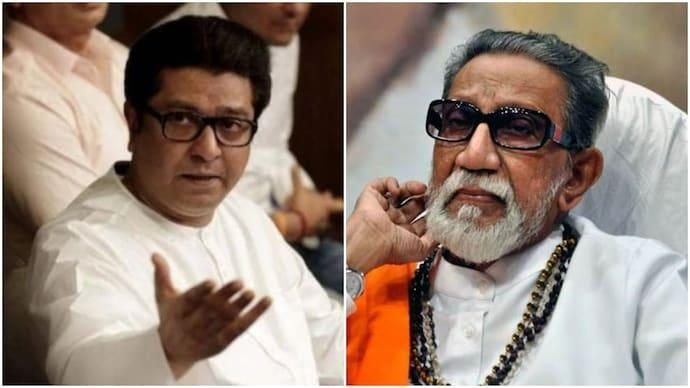
- Regionalism refers to the emergence and growth of a strong sense of attachment and loyalty towards a particular region or territory.
- Regional consciousness develops because of shared cultural elements such as language, religion, ethnicity, tribal identity, or historical experiences.
- Son of the soil movements like Shiv Sena and MNS in Maharashtra question migrants’ entry into major cities Regionalism in India manifests itself through:
- 1. Statehood demands 2. Son-of-the-soil movements and anti-migrant sentiments 3.
- Inter-state disputes 4. Centre-state conflicts 5.
- Secessionist movements 6. Rise of regional parties 7.
- Assertion of regional culture and identity Scholars such as Paul Brass and Edward Sapir emphasize that linguistic diversity has played a major role in promoting regionalism in India.
- Economic backwardness, uneven development, political aspirations of regional elites, and geographical-historical factors have further strengthened regional consciousness.
20 · Regionalism as a Threat#
- Earlier scholars and political leaders largely viewed regionalism negatively.
- Jawaharlal Nehru cautioned against regionalism as a threat to national unity.
- G. S.Ghurye also argued that strong sub-national loyalties could weaken nationalism and even promote separatist tendencies.
- According to this perspective, unchecked regionalism may encourage parochialism, inter-regional hostility, and even Balkanisation of the country.
- Regionalism may also:
- Threaten national integration
- Promote anti-migrant violence
- Intensify secessionist tendencies
- Obstruct psychological integration of citizens
- Generate inter-state conflicts over water, territory, and resources
21 · Regionalism as a Constructive Force#

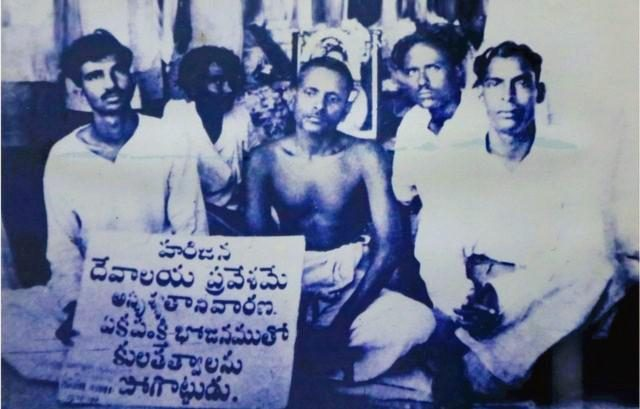
- Contemporary sociological understanding increasingly views regionalism as a constructive force within a plural society. Dr. Manmohan Singh argued that regional and sub-regional identities are not necessarily opposed to nationalism and that India’s diversity should be accommodated through harmony rather than uniformity.
- ‘Amarajeevi’ Potti Sreeramalu (1901-1952) fasted to death demanding statehood for Andhra Pradesh Regionalism can strengthen democracy by:
- Bringing governance closer to people
- Encouraging participation and representation
- Promoting competitive federalism
- Protecting regional cultures and identities
- Facilitating balanced regional development Movements for separate states such as Telangana, Uttarakhand, and Jharkhand illustrate how regional aspirations are often linked with demands for better governance, development, representation, and recognition of cultural identity.
- Thus, regional movements are not always secessionist; many function within the constitutional framework and strengthen democratic participation.
22 · Federalism and Democratic Decentralization#
- Decentralization refers to the transfer of powers and responsibilities from the central government to lower levels of government enjoying a degree of autonomy.
- Federalism is a broader political arrangement involving constitutional division of powers between the Centre and states.
- According to Robert Inman and Daniel Rubinfeld, democratic federalism promotes individual liberty, economic efficiency, and citizen participation.
- Indian federalism is often described as quasi-federal because it combines both federal and unitary features.
- It is federal because:
- There are separate central and state governments
- Powers are constitutionally divided through Union, State, and Concurrent Lists
- States enjoy certain financial and administrative autonomy At the same time, India also has several unitary features such as:
- Single Constitution
- Single citizenship
- Integrated judiciary
- All India Services
- Residual powers with the Centre
- Provision of President’s Rule under Article 356 Thus, Indian federalism attempts to maintain national unity while accommodating regional diversity.
23 · Changing Nature of Indian Federalism#

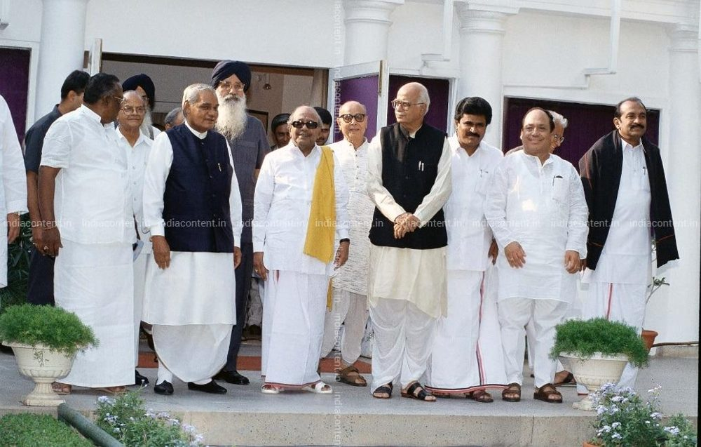
- Yogendra Yadav argues that the nature of Indian federalism depends not only on constitutional provisions but also on political context.
- During the Nehruvian period, federalism was still nascent, as the Congress dominated both Centre and states, and national leadership overshadowed regional leadership. In the Indira Gandhi and Rajiv Gandhi period, regional parties became stronger and Centre-state conflicts increased.
- This phase also witnessed frequent misuse of Article 356 to dismiss elected state governments.
- The period from 1989 to 2014 is often regarded as the golden phase of Indian federalism because coalition governments at the Centre depended heavily on regional parties.
- Then Prime Minister A.B. Vajpayee with leaders of Akali Dal, DMK, and other regional parties States acquired greater bargaining power, and the S.
- R. Bommai v. Union of India judgment strengthened federalism by restricting misuse of Article 356 and recognizing federalism as part of the Constitution’s basic structure.
- In the contemporary period, scholars such as Christophe Jaffrelot note both positive and negative trends.
- West Bengal Chief Minister Suvendu Adhikari seeks blessings of Prime Minister Modi Positive developments include greater tax devolution to the states after the 14th Finance Commission, replacement of Planning Commission by NITI Aayog, and the emphasis on cooperative federalism However, concerns remain regarding centralization of political authority and the growing dominance of national leadership over state governments and expansion of centrally sponsored schemes into state subjects
24 · Decentralization and Grassroots Democracy#
- Democratic decentralization became more institutionalized through the 73rd and 74th Constitutional Amendments, which strengthened Panchayati Raj Institutions and urban local bodies.
- Decentralization strengthens democracy by:
- Increasing people’s participation in governance
- Making administration more accountable
- Empowering marginalized groups through reservations
- Bringing decision-making closer to local communities Thus, decentralization deepens democracy by transforming citizens from passive recipients into active participants in governance.
- In essence, regionalism, federalism, and decentralization are deeply interconnected processes in Indian democracy.
- While excessive regionalism can sometimes threaten national integration, democratic federalism and decentralization provide constitutional mechanisms to accommodate diversity, manage regional aspirations, and strengthen participatory democracy in India.
25 · Role of Religion in Politics#

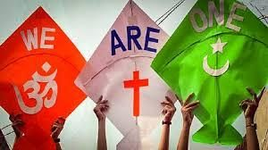
- Religion has played a significant role in shaping Indian society, culture, and politics.
- Unlike many Western societies where modernization was associated with decline of religion in public life, religion in India continues to remain a major source of identity, social solidarity, and political mobilization.
- Indian politics has therefore witnessed simultaneous processes of secularization, religious revivalism, secular politics, and communal mobilization.
- The relationship between religion and politics in India is thus complex and often contradictory.
26 · Secularism in India#
- Secularism as an ideology originated in the West after the French Revolution, where it primarily implied separation between Church and State.
- In India, however, secularism emerged under different historical conditions.
- Indian secularism developed during the anti-colonial struggle as a response to colonial divide-and-rule policies and communal politics.
- Thomas Pantham argues that while Western secularism emphasizes strict separation of religion and state, Indian secularism is based on equal respect for all religions.
- In the Hindi version of the Constitution, secularism is expressed as Panth Nirpekshta, meaning state neutrality towards all religions.
- The idea of Sarva Dharma Sambhava captures this spirit of equal respect.
- Rajeev Bhargava suggests that the Indian state maintains a relationship of “principled distance” or “critical respect” towards religions.
- Unlike the Western model, the Indian state may intervene in religious matters to ensure social reform and equality while still respecting religious diversity.
- Several factors contributed to the development of secularism in India:
- 1. India’s religious diversity and plural social structure 2.
- The inclusive and accommodative traditions within Indian civilization 3.
- The nationalist movement’s emphasis on unity against colonialism 4.
- Constitutional commitment towards equality and citizenship The Indian state after Independence largely followed Nehruvian secularism, which emphasized modernization, scientific temper, and rationality.
- However, scholars such as Ashis Nandy, T. N.
- Madan, and Partha Chatterjee criticize this model.
- They argue that Nehruvian secularism was largely a top-down elite project that underestimated the continuing importance of religion in people’s lives. T. N.
- Madan has described secularism in India as a ‘myth’ because for most ordinary Indians, religion remains deeply embedded in social and cultural life.
- Thus, unlike the secularization thesis which predicted decline of religion with modernization, religion in India continues to remain socially and politically influential.
27 · Secularization#
- Secularization refers to the process through which religion loses its influence over social, political, and public life due to modernization, urbanization, and scientific rationality.
- Classical sociologists such as Max Weber and Emile Durkheim believed that modernization would gradually reduce the role of religion in society.
- In India, some aspects of secularization are visible:
- Decline of caste-based ritual restrictions in urban areas
- Increasing individualism and rationality
- Expansion of scientific education
- Weakening of priestly authority in some contexts
- Greater interaction between communities in urban-industrial settings However, Indian society has not become fully secular despite economic development and education.
- Religion continues to influence:
- Electoral politics
- Public mobilization
- Personal identity
- Marriage and family practices
- Community organizations The increasing public visibility of religion, religious nationalism, pilgrimages, and media-driven religiosity challenges the classical secularization thesis.
- Scholars such as T. N. Madan argue that modernization in India has not displaced religion; rather, religion has adapted itself to modern forms of communication and political mobilization.
- Thus,secularization in India has been partial and uneven rather than linear or complete.
28 · Communalism in India#
- Communalism is an ideology that treats a religious community as a political and social unit whose interests are separate from and often opposed to those of other communities.
- Communalism therefore involves politicization of religious identity.
- Several political leaders instigate the public through hate speeches According to Bipan Chandra, communalism emphasizes the distinctiveness and opposition of one religious community’s interests against others.
- It seeks to mobilize people politically on the basis of religion.
- Communalism manifests in various forms, such as communal riots, hate speech, religious polarization, lynching and targeted violence, or destruction of places of worship. Both majoritarianism and minoritarianism fuel communal politics, albeit in different ways.
- Majoritarianism refers to the tendency of the majority community to dominate political and cultural life while marginalizing minorities.
- Minoritarianism, on the other hand, refers to identity-based mobilization by minority groups arising from insecurity or perceived discrimination.
- Both tendencies can intensify communal tensions.
- Majoritarianism may weaken secularism and pluralism by advocating for the dominance of the majority as rightful in a democratic polity.
- Minoritarianism may encourage identity isolation and communal polarization.
- Combinedly, the competitive religious mobilization of the majority and minority communities can deepen social fragmentation and weaken national integration.
29 · Causes of Communalism#
- Several factors have contributed to communalism in India:
- 1. Colonial divide-and-rule policies 2. Politicization of religious identities 3.
- Socio-economic insecurities and competition 4.
- Role of communal organizations and propaganda 5.
- Electoral mobilization along religious lines Communal riots lead to loss of life and property
30 · Why Communal Riots take place?#

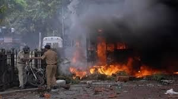
- Paul Brass argues that communal riots are rarely spontaneous; they are often politically engineered and organized to polarize communities for electoral gain.
- In his detailed study, Ashutosh Varshney found that communal riots in India are overwhelmingly urban phenomena.
- He emphasized the role of civil society organizations in preventing communal violence.
- According to Varshney, cities with strong inter-community associations and shared civic organizations are less prone to riots because communication channels between communities remain open.
- However, G. S. Ghurye viewed Hindu-Muslim relations as an outcome of deep cultural differences and tensions.
- Pratap Bhanu Mehta argues that communal politics cannot be reduced to the right-wing ideology alone, as even formally secular political parties have often engaged in majoritarian practices.
31 · Religion, Pluralism and Nation-Building#
- India’s nation-building process depends significantly upon managing diversity and strengthening pluralism.
- India is not a homogeneous nation but a civilization marked by multiple religions, languages, castes, tribes, and ethnic identities.
- Democratic stability in such a society requires accommodation, tolerance, and constitutional protection of diversity.
- Religious pluralism can strengthen democracy by:
- Encouraging coexistence and tolerance
- Protecting minority rights
- Promoting inclusive citizenship
- Preventing authoritarian homogenization At the same time, politicization of religion can weaken national integration if it promotes exclusionary nationalism or communal hostility.
- In essence, the relationship between religion and politics in India is deeply complex.
- While secularism remains a constitutional ideal, religion continues to shape public and private life in significant ways.
- The challenge before Indian democracy is therefore not elimination of religion from public life, but ensuring that religious diversity coexists with constitutional values of equality, pluralism, and democratic citizenship.
32 · Indian Democracy at Work#
- India is the world’s largest democracy, characterized by universal adult franchise, constitutionalism, federalism, and social diversity.
- Indian democracy operates within a deeply stratified society marked by caste, religion, language, ethnicity, and class inequalities.
- Therefore, democracy in India is not merely a political arrangement but also a process of nation-building, social transformation, participation, and negotiation among diverse social groups.
- The functioning of Indian democracy depends not only on formal institutions such as elections and legislatures, but also on citizenship, media, political parties, pressure groups, and democratic culture.
33 · Nation and Citizenship#
- Nation-building refers to the process of creating a sense of common identity, political unity, and emotional integration among diverse social groups within a nation-state.
- In India, nation-building has been particularly challenging due to immense diversity based on religion, language, caste, tribe, and region.
- The Indian Constitution has attempted to create national unity through democratic citizenship, secularism, equality, and federalism.
- The national leadership has attempted to promote nation-building through the modern education system, and promoting harmonious inter-community relations through dialogue and regular interactions.
- Religion has also played an important role in nation-building in India.
- On one hand, religion has contributed to social solidarity, ethical values, and cultural continuity.
- On the other hand, politicization of religion and communal riots have sometimes weakened national integration.
- Therefore, Indian nation-building has depended upon balancing religious diversity with constitutional secularism and pluralism.
- Citizenship in India is based on the principle of equal political membership irrespective of caste, religion, gender, or language.
- Universal adult franchise granted political equality to all citizens from the very beginning, unlike many Western democracies where voting rights evolved gradually.
- Indian democracy has also expanded citizenship beyond formal voting rights by enabling marginalized groups such as Dalits, women, backward classes, and tribes to increasingly participate in political processes.
- Thus, democracy in India has become both a political system and a means of social empowerment.
- B. R. Ambedkar argued that political democracy cannot function well without social democracy.
- According to him, social democracy rests upon the principles of liberty, equality, and fraternity being incorporated in the social life of the people.
- He warned that India had entered a situation where political equality coexisted with deep social and economic inequalities rooted in caste.
- Thus, unless social hierarchies are transformed, democratic institutions may remain fragile.
34 · Political Parties and Pressure Groups#

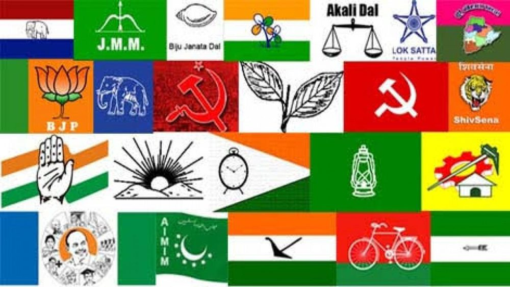
- Political parties are essential institutions of representative democracy.
- They aggregate interests, mobilize citizens, contest elections, and form governments.
- India has a multi-party system characterized by the coexistence of national and regional parties.
- India has amongst the largest number of political parties in the world Political parties perform several functions:
- Political recruitment and leadership formation
- Interest aggregation and articulation
- Policy formulation and governance
- Political socialization and mobilization Apart from the few national parties, a plethora of regional parties have played a particularly important role in representing local aspirations, caste groups, linguistic identities, and regional interests.
- Coalition politics since the late 1980s strengthened federalism and increased participation of regional actors in national politics.
- Pressure groups are organized groups that attempt to influence public policy and governmental decisions without directly seeking political power.
- Unlike political parties, they do not contest elections to form governments.
- Examples include:
- Trade unions
- Business associations
- Farmers’ organizations
- Student organizations
- Environmental groups
- Caste and religious associations Pressure groups influence decision-making through lobbying, protests, strikes, petitions, media campaigns, and public mobilization.
- Farmers’ movements, anti-corruption movements, environmental campaigns, and caste-based mobilizations illustrate how pressure groups shape democratic politics in India.
- Pressure groups strengthen democracy by:
- Representing diverse interests
- Increasing political participation
- Holding governments accountable
- Acting as intermediaries between citizens and the state However, unequal access to resources means that powerful corporate and elite groups may exercise disproportionate influence over policy-making.
35 · Political Elites in India#
- Political elites refer to the relatively small group of individuals that exercise disproportionate influence over political decision-making, leadership, governance and the distribution of power.
- They include senior political leaders, ministers, legislators, influential party functionaries and others capable of shaping state policy.
- In India, political elites have undergone important transformations since Independence.
36 · Changing nature of India’s political elites#
- 1. From upper-caste dominance to greater diversity: Early post-Independence political leadership was disproportionately drawn from educated, upper-caste and privileged groups.
- Democratic mobilisation, reservations and backward-class movements subsequently facilitated the rise of OBC, Dalit and tribal leaders.
- 2. From national elites to regional elites: The Congress-dominated political system initially concentrated influence among national leaders.
- The growth of regional parties and coalition politics strengthened state-level and regional elites, including leaders such as N.T. Rama Rao, Lalu Prasad Yadav and Mayawati.
- 3. Rise of backward-caste elites: The Mandal era and expansion of electoral participation produced powerful political leadership among intermediate and backward castes.
- Christophe Jaffrelot described the wider political rise of lower castes as India's silent revolution.
- 4. From traditional notables to professional politicians: Landlords, hereditary elites and locally dominant families initially exercised considerable political influence.
- Over time, full-time party politicians, grassroots organisers and leaders emerging from social movements have acquired greater importance.
- 5. Increasing influence of economic elites: Business interests, wealthy candidates, political funding networks and corporate lobbying have acquired considerable influence over elections and policymaking.
- 6. Political dynasties: Despite democratic expansion, family-based political succession remains significant across several national and regional parties, illustrating the coexistence of elite circulation and elite reproduction.
- 7. Continuing inequalities: Women, Dalits, OBCs and tribals have gained political visibility, but their representation in the highest positions of power remains uneven.
- Numerical inclusion does not always translate into effective authority.
- 8. Centralisation of leadership: The coalition era strengthened regional bargaining, while periods of strong single-party leadership have witnessed greater concentration of authority around prominent national leaders and central party organisations.
- Thus, Indian political elites have become more socially diverse and regionally dispersed, although economic inequality, political dynasties and concentration of power continue to restrict the democratisation of elite structures.
- The changing character of India’s political elites reflects the wider social transforming taking place.
- Political elites can also promote social transformation by introducing reforms, expanding political representation, mobilising disadvantaged groups and shaping development policies.
- For example, Ambedkar's leadership advanced constitutional safeguards and social justice, while backward-caste leaders challenged established political hierarchies.
- However, elites may also reproduce inequalities through patronage, dynastic politics, corruption and concentration of resources.
37 · Role of Media#

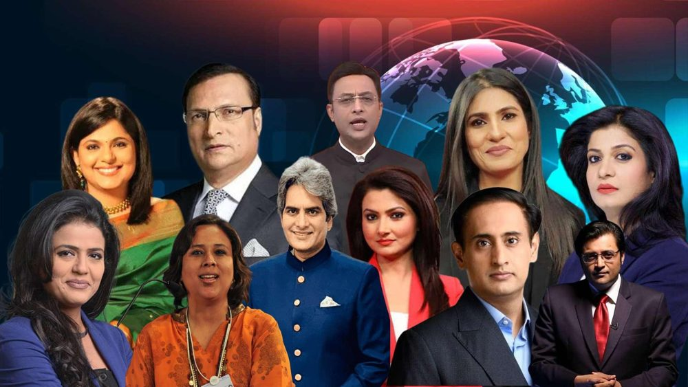
- Media is often described as the “fourth pillar of democracy” because it acts as a bridge between the state and citizens.
- A free and independent media plays an important role in informing citizens, shaping public opinion, ensuring accountability, and exposing corruption and abuse of power.
- The media contributes to democracy by:
- Disseminating information and political awareness
- Providing a platform for public debate
- Acting as a watchdog over the government
- Facilitating transparency and accountability
- Amplifying voices of marginalized groups
- Indian TV and print news media has significantly shaped its political discourse The expansion of television, digital media, and social media has significantly transformed political communication in India.
- Elections, social movements, and public opinion are increasingly influenced by media narratives.
- However, media in contemporary India also faces several criticisms: Commercialization and corporate control
- Spread of misinformation and fake news
- Political polarization and sensationalism
- Decline of independent journalism
- Media trials and erosion of ethical standards The advent of social media has democratized communication, but also intensified misinformation, hate speech, and political polarization.
- Thus, while media strengthens democratic participation, it can also become a tool of manipulation and propaganda if not guided by ethical responsibility.
- In essence, Indian democracy functions through continuous interaction between constitutional institutions and social forces.
- While Indian democracy faces challenges such as inequality, communalism, media polarization, and identity politics, it has also enabled participation and political empowerment of diverse social groups.
- Its strength ultimately depends upon deepening social democracy, protecting pluralism, and ensuring an active and informed citizenship.
38 · Political Philosophies of Modern India#
- Modern Indian political thought emerged in response to colonialism, social inequality, communal tensions, and the challenges of nation-building.
- Thinkers such as Mahatma Gandhi, Jawaharlal Nehru, B.
- R. Ambedkar, M. N. Roy, and Vinayak Damodar Savarkar developed distinct visions of democracy, secularism, nationalism, state, and social justice.
- Their ideas continue to influence Indian politics and public discourse.
39 · Gandhi#
- Gandhi’s political philosophy was deeply connected with his moral and social philosophy.
- He believed in non-violence (ahimsa) and truth (satya) as the foundations of politics.
- Gandhi viewed the modern centralized state with suspicion, arguing that the state represents violence in an organized and concentrated form.
- In this sense, he had anarchist leanings and preferred decentralized forms of governance.
- Mahatma Gandhi (1883-1944) is widely regarded as the Father of the Nation Gandhi conceptualized Sarvodaya, meaning welfare of all.
- Politically, it implied equal participation and dignity for every individual.
- He idealizedGram Swaraj, where villages would function as largely self-sufficient and autonomous units.
- Democracy, according to Gandhi, required tolerance, dialogue, and respect for opposing viewpoints.
- Gandhi also made significant efforts towards communal harmony.
- He believed that all religions contain moral truth and should coexist peacefully.
- He opposed communal polarization and repeatedly emphasized Hindu-Muslim unity during the freedom struggle.
- His idea of secularism was not hostility towards religion, but equal respect for all faiths.
- Gandhi advocated protection of minority rights and inter-community harmony as essential for nation-building.
40 · Nehru#
- Nehru was a committed democrat and played a central role in establishing democratic institutions in independent India.
- Inspired by Western liberal democracy, he emphasized parliamentary government, universal adult franchise, secularism, rule of law, and civil liberties.
- Jawaharlal Nehru (1889-1964) was the chief architect of modern India Unlike Gandhi, Nehru believed in a strong, centralized, developmental state.
- Influenced partly by the Soviet planning model, he viewed the state as the key instrument of modernization and economic development.
- Under Nehru’s leadership, India developed democratic institutions such as an independent judiciary, multi-party system, free press, and space for dissent.
- Nehru also strongly supported secularism and scientific temper.
- He believed modernization and rationality would gradually reduce the divisive role of caste and religion in politics.
41 · Ambedkar#
- Ambedkar’s political philosophy centred around social justice, constitutionalism, and dignity of the individual.
- He sharply criticized caste hierarchy and argued that political democracy cannot survive without social and economic democracy.
- Ambedkar differed significantly from Gandhi’s idealization of village communities.
- He regarded villages as sites of caste oppression and social exclusion.
- Instead of empowering traditional communities, Ambedkar emphasized empowering individuals through constitutional rights and state intervention.
- B.R. Ambedkar (1891-1956) - a proponent of social justice, was also a wise democrat Ambedkar identified several conditions necessary for democracy to survive:
- 1. Constitutional morality: Citizens and leaders must respect the spirit of the Constitution and democratic institutions.
- 2. Rejection of hero worship: He warned that blind devotion to political leaders could lead to dictatorship. 3.
- Social and economic equality: Political equality alone is insufficient without reducing social and economic inequalities.
- Ambedkar is therefore regarded as a wise democrat because he understood democracy not merely as a system of elections, but as a way of life rooted in liberty, equality, and fraternity.
- His democratic vision sought to combine constitutional governance with social transformation.
42 · M. N. Roy#
- M. N. Roy developed the philosophy of Radical Humanism.
- Initially influenced by Marxism, Roy later became critical of both capitalism and authoritarian communism.
- He argued that both systems suppress individual freedom in different ways.
- M.N. Roy (1887 -1954) founded the Communist Party of India but later drifted away Radical Humanism placed the individual at the centre of social and political life.
- According to Roy, true social progress should be measured by the degree of freedom enjoyed by individuals.
- All institutions and social arrangements must ultimately serve human freedom and rationality.
- Roy was also critical of religion and dogma.
- He believed religion restricts rational thinking by encouraging belief in supernatural authority.
- Instead, he advocated a secular and rational ethical order based on humanism.
- In this sense, secularism can be viewed as an outcome of twentieth-century humanistic radicalism because thinkers like Roy emphasized reason, individual freedom, scientific temper, and human dignity over religious authority and dogma.
43 · Savarkar#

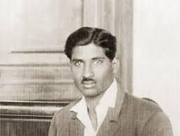
- V. D. Savarkar developed the ideology of Hindutva and viewed India as a civilizational nation rooted in a common cultural heritage.
- He argued that Indian nationhood was not a product of colonialism but had deep historical and cultural foundations.
- V.D. Savarkar (1883-1966) is one of the key architects of Hindutva ideology which dominates Indian politics at present Savarkar subscribed to the idea of Akhand Bharat, envisioning India as a culturally unified and indivisible civilization.
- His understanding of nationalism emphasized cultural unity based on common territory, heritage, and historical consciousness.
- Savarkar’s ideas later became influential in shaping Hindu nationalist politics and debates around cultural nationalism in India.
- In essence, modern Indian political thought reflects diverse and competing visions of democracy, nationalism, secularism, and social justice.
- Together, these philosophies continue to shape the ideological foundations and political debates of contemporary India.
Traps#
| Trap | What goes wrong, and the rule |
|---|---|
| Secularism: West vs India | West: strict separation of Church and State; India: equal respect and principled distance. Exam-hall rule: West = separation, India = equal respect. |
| Majoritarianism vs minoritarianism | Both fuel communal tension: dominance of the majority versus identity mobilisation by insecure minorities. Exam-hall rule: name both. |
| Gandhi vs Nehru vs Ambedkar | Gandhi: village and Sarvodaya; Nehru: centralised developmental state; Ambedkar: constitutional rights and individual empowerment. Exam-hall rule: tie each thinker to his institution. |
Recall sheet#
Read once, hide it, then rebuild the chapter from memory.
- Who said caste gets politicised? Rajni Kothari
- Article for backward classes commission? Article 340
- Creamy layer income limit in the handout? Parents' annual income above Rs. 8,00,000 for non-government OBCs
- Pantham on Indian secularism? Equal respect for all religions
- Hindi word for secularism in the Constitution? Panth Nirpekshta
- Bhargava's phrase? Principled distance or critical respect
- Who defined communalism as separate opposed interests? Bipan Chandra
- Who says riots are engineered? Paul Brass
- Case restricting Article 356? S.R. Bommai v. Union of India
- Amendments for local bodies? 73rd and 74th
- Ambedkar's three conditions for democracy? Constitutional morality, rejection of hero worship, social and economic equality
- Roy's philosophy? Radical Humanism
Abbreviation column#
| Short form | Full form | One-line meaning |
|---|---|---|
| OBC | Other Backward Classes | Beneficiaries of Mandal reservation |
| MNS | Maharashtra Navnirman Sena | Son-of-the-soil politics example |
| SC | Scheduled Caste | Debated for creamy-layer application |
| ST | Scheduled Tribe | Debated for creamy-layer application |
Revise#
| Day | What to do |
|---|---|
| Day 0 | Read the Exam lens and the notes; mark the chapter done |
| Day +1 | Recall sheet: read once, hide, rebuild |
| Day +3 | Flashcards: missed ones only |
| Day +7 | Quick quiz; fix each miss against the Traps |
| Day +21 | Write two Mains answers from memory using the skeletons |
| Day +45 | Blank-page test: redraw the chapter map |
Test yourself#
Quick quiz
Flashcards
Tap the card to flip.
Mains answer skeletons
One for each Mains PYQ quoted in the handout. Tap to open; try the answer first.
2026 · 10 marks · How does the concept ‘secular’ go beyond any religion in plural society like India? Analyse.
Question. How does the concept ‘secular’ go beyond any religion in plural society like India? Analyse.
- Intro: name Politics and Society in India and state the central idea in one line (see The story first).
- Body: build the answer from the notes under: Secularism in India; Role of Religion in Politics.
- Close: finish with the matching criticisms section and a one-line judgement.
2025 · 10 marks · Which measures would you suggest for preventing caste conflicts in India? Justify your view.
Question. Which measures would you suggest for preventing caste conflicts in India? Justify your view.
- Intro: name Politics and Society in India and state the central idea in one line (see The story first).
- Body: build the answer from the notes under: Caste Conflicts; Measures to Prevent Caste Conflicts.
- Close: finish with the matching criticisms section and a one-line judgement.
2025 · 10 marks · Discuss the social bases of political mobilization in Independent India. Has some change occurred in…
Question. Discuss the social bases of political mobilization in Independent India. Has some change occurred in these during the last 60–70 years?
- Intro: name Politics and Society in India and state the central idea in one line (see The story first).
- Body: use the chapter sections that match the keywords of the question.
- Close: finish with the matching criticisms section and a one-line judgement.
2025 · 20 marks · What do you mean by nation building? What is the role of religion in nation building? Elaborate your…
Question. What do you mean by nation building? What is the role of religion in nation building? Elaborate your answer.
- Intro: name Politics and Society in India and state the central idea in one line (see The story first).
- Body: build the answer from the notes under: Role of Religion in Politics; Nation and Citizenship.
- Close: finish with the matching criticisms section and a one-line judgement.
2024 · 10 marks · What are pressure groups? Discuss their role in decision-making in democracy.
Question. What are pressure groups? Discuss their role in decision-making in democracy.
- Intro: name Politics and Society in India and state the central idea in one line (see The story first).
- Body: build the answer from the notes under: Political Parties and Pressure Groups.
- Close: finish with the matching criticisms section and a one-line judgement.
2024 · 10 marks · Discuss the changing nature of political elites in India.
Question. Discuss the changing nature of political elites in India.
- Intro: name Politics and Society in India and state the central idea in one line (see The story first).
- Body: build the answer from the notes under: Political Elites in India.
- Close: finish with the matching criticisms section and a one-line judgement.
2024 · 20 marks · What do you understand by decentralisation of power? What is its role in strengthening the roots of …
Question. What do you understand by decentralisation of power? What is its role in strengthening the roots of democracy in India? Elaborate.
- Intro: name Politics and Society in India and state the central idea in one line (see The story first).
- Body: use the chapter sections that match the keywords of the question.
- Close: finish with the matching criticisms section and a one-line judgement.
2023 · 20 marks · How do you account for the increasing significance of religion in public and personal spheres in the…
Question. How do you account for the increasing significance of religion in public and personal spheres in the context of secularization thesis in India? Explain.
- Intro: name Politics and Society in India and state the central idea in one line (see The story first).
- Body: build the answer from the notes under: Secularism in India; Role of Religion in Politics.
- Close: finish with the matching criticisms section and a one-line judgement.
2022 · 20 marks · Discuss the changing nature of structure of political elites.
Question. Discuss the changing nature of structure of political elites.
- Intro: name Politics and Society in India and state the central idea in one line (see The story first).
- Body: build the answer from the notes under: Political Elites in India.
- Close: finish with the matching criticisms section and a one-line judgement.
2021 · 10 marks · Is social democracy a precondition for political democracy? Comment. 10
Question. Is social democracy a precondition for political democracy? Comment. 10
- Intro: name Politics and Society in India and state the central idea in one line (see The story first).
- Body: use the chapter sections that match the keywords of the question.
- Close: finish with the matching criticisms section and a one-line judgement.
2021 · 20 marks · Rising “ethnocentrism” is leading to conflict in our society. Assess this statement with appropriate…
Question. Rising “ethnocentrism” is leading to conflict in our society. Assess this statement with appropriate reasons.
- Intro: name Politics and Society in India and state the central idea in one line (see The story first).
- Body: build the answer from the notes under: Ethnocentrism and Conflict.
- Close: finish with the matching criticisms section and a one-line judgement.
2021 · 10 marks · Does regionalism essentially lead to decentralization of power? Substantiate your answer with releva…
Question. Does regionalism essentially lead to decentralization of power? Substantiate your answer with relevant examples.10
- Intro: name Politics and Society in India and state the central idea in one line (see The story first).
- Body: build the answer from the notes under: Regionalism in India.
- Close: finish with the matching criticisms section and a one-line judgement.
2020 · 10 marks · What do you understand by democratic federalism? How does it promote decentralization of power in In…
Question. What do you understand by democratic federalism? How does it promote decentralization of power in India?
- Intro: name Politics and Society in India and state the central idea in one line (see The story first).
- Body: build the answer from the notes under: Federalism and Democratic Decentralization.
- Close: finish with the matching criticisms section and a one-line judgement.
2019 · 20 marks · What is caste politics? Substantiate your answer with examples of how identities are defined by cast…
Question. What is caste politics? Substantiate your answer with examples of how identities are defined by caste dynamics.
- Intro: name Politics and Society in India and state the central idea in one line (see The story first).
- Body: build the answer from the notes under: Caste Politics and Political Mobilization.
- Close: finish with the matching criticisms section and a one-line judgement.
2019 · 20 marks · Comment on the changing democratic profile of India.
Question. Comment on the changing democratic profile of India.
- Intro: name Politics and Society in India and state the central idea in one line (see The story first).
- Body: use the chapter sections that match the keywords of the question.
- Close: finish with the matching criticisms section and a one-line judgement.
2018 · 10 marks · With increase in education and economic development is Indian society becoming more secular?
Question. With increase in education and economic development is Indian society becoming more secular?
- Intro: name Politics and Society in India and state the central idea in one line (see The story first).
- Body: build the answer from the notes under: Secularism in India.
- Close: finish with the matching criticisms section and a one-line judgement.
2018 · 10 marks · Media is the fourth pillar of democracy. Discuss,
Question. Media is the fourth pillar of democracy. Discuss,
- Intro: name Politics and Society in India and state the central idea in one line (see The story first).
- Body: use the chapter sections that match the keywords of the question.
- Close: finish with the matching criticisms section and a one-line judgement.
2018 · 20 marks · Has caste system hindered democracy and adult franchise in India? Discuss.
Question. Has caste system hindered democracy and adult franchise in India? Discuss.
- Intro: name Politics and Society in India and state the central idea in one line (see The story first).
- Body: use the chapter sections that match the keywords of the question.
- Close: finish with the matching criticisms section and a one-line judgement.
2017 · 20 marks · Explain the issues relating to ethnicity and sub-ethnicity.
Question. Explain the issues relating to ethnicity and sub-ethnicity.
- Intro: name Politics and Society in India and state the central idea in one line (see The story first).
- Body: build the answer from the notes under: Ethnic Conflicts; Ethnicity and Identity Movements.
- Close: finish with the matching criticisms section and a one-line judgement.
2017 · 20 marks · To what extent does nation building depend on strengthening of pluralities in Indian society.
Question. To what extent does nation building depend on strengthening of pluralities in Indian society.
- Intro: name Politics and Society in India and state the central idea in one line (see The story first).
- Body: build the answer from the notes under: Nation and Citizenship.
- Close: finish with the matching criticisms section and a one-line judgement.
2017 · 10 marks · Give an account of the problems relating to the "creamy layer".
Question. Give an account of the problems relating to the "creamy layer".
- Intro: name Politics and Society in India and state the central idea in one line (see The story first).
- Body: build the answer from the notes under: Creamy Layer.
- Close: finish with the matching criticisms section and a one-line judgement.
2016 · 10 marks · Comment on the increasing significance of caste in politics.
Question. Comment on the increasing significance of caste in politics.
- Intro: name Politics and Society in India and state the central idea in one line (see The story first).
- Body: use the chapter sections that match the keywords of the question.
- Close: finish with the matching criticisms section and a one-line judgement.
2016 · 20 marks · Elucidate the concepts of 'majoritarianism and 'minoritarianism' in accentuating communal tensions i…
Question. Elucidate the concepts of 'majoritarianism and 'minoritarianism' in accentuating communal tensions in India.
- Intro: name Politics and Society in India and state the central idea in one line (see The story first).
- Body: build the answer from the notes under: Communalism in India.
- Close: finish with the matching criticisms section and a one-line judgement.
2015 · 20 marks · Discuss B.R. Ambedkar as a wise democrat.
Question. Discuss B.R. Ambedkar as a wise democrat.
- Intro: name Politics and Society in India and state the central idea in one line (see The story first).
- Body: build the answer from the notes under: Ambedkar.
- Close: finish with the matching criticisms section and a one-line judgement.
2014 · 10 marks · Who are the elites? Discuss their roles in bringing social transformation.
Question. Who are the elites? Discuss their roles in bringing social transformation.
- Intro: name Politics and Society in India and state the central idea in one line (see The story first).
- Body: build the answer from the notes under: Political Elites in India.
- Close: finish with the matching criticisms section and a one-line judgement.
2014 · 20 marks · "Tribal conflicts based on ethnic differences often camouflage a struggle for political and economic…
Question. "Tribal conflicts based on ethnic differences often camouflage a struggle for political and economic advantage.' Substantiate with examples.
- Intro: name Politics and Society in India and state the central idea in one line (see The story first).
- Body: build the answer from the notes under: Ethnic Conflicts; Ethnicity and Identity Movements.
- Close: finish with the matching criticisms section and a one-line judgement.
2014 · 10 marks · Write short notes with a sociological perspective on the following in about 150 words: Gandhi's effo…
Question. Write short notes with a sociological perspective on the following in about 150 words: Gandhi's efforts on communal harmony
- Intro: name Politics and Society in India and state the central idea in one line (see The story first).
- Body: build the answer from the notes under: Communalism in India.
- Close: finish with the matching criticisms section and a one-line judgement.
2013 · 15 marks · Discuss the sociological aspects of movements for separate States. (200 words)
Question. Discuss the sociological aspects of movements for separate States. (200 words)
- Intro: name Politics and Society in India and state the central idea in one line (see The story first).
- Body: use the chapter sections that match the keywords of the question.
- Close: finish with the matching criticisms section and a one-line judgement.